好吃又好玩的造型糖塑
<甜餅組>
糖畫俗稱「倒糖人兒」、「倒糖餅兒」。糖為原料，以勺子為「筆」、糖稀為「墨」。一個擔子，一頭是加熱用的糖鍋，另一頭是材料和工具，加上一塊大理石板，糖畫藝人便可「走江湖」。糖畫曾廣泛流行於中國南方的重慶市與四川省，之後藝人們又融入皮影、剪紙等造型手法，改為直接手持小銅勺，舀糖液繪出圖案，漸漸發展成為今日的糖畫藝術。
「糖畫」中有平面糖畫和立體糖畫。平面糖畫較為常見，立體糖畫則是將平面的零件相拼接，創造出更多元的造型。
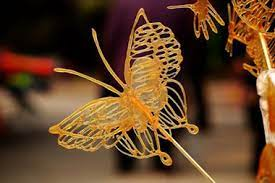
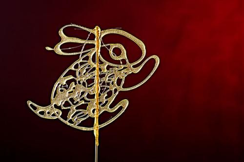
畫糖的動作要快，涼了容易凝固。畫糖的每一筆之間不能間斷，會有畫畫筆順的問題。在畫糖畫之前，通常會進行繪畫練習，主要目的是練習筆順和構圖。
首先要化糖，把準備好的糖塊放在糖鍋內溶化，用溫火將糖慢慢溶解，不需一直攪動，以免燒焦。
再來，將糖倒在光滑的銅板上，畫出造型，要注意將圖畫的所有部分連結起來，並在糖未凝固前用鏟子鏟離銅板。
最後，用一根竹籤沾取少許的熱糖汁，黏在已成形的糖片上，便大功告成。
常於熱鬧的香堤大道廣場表演畫糖
14歲時便跟著父親到處擺攤，一邊看著父親表演畫糖、一邊承接著技術。
一開始從小型的圖案開始練習，漸漸地越來越複雜、多變。甚至許多畫糖用具都是自己設計、製造。
吳富雄年輕時，跟著傳統民俗工藝團體到處表演，去了各地的文化中心、文化局、學校，美國、新加坡、加拿大也曾有他畫糖的痕跡。
吳富雄說：「我沒有特別喜歡哪一個圖案，客人喜歡什麼我就畫什麼。我也沒有在傳承，那有其他人在做。」不過，他依舊常去撐起古樸的攤子，靜靜地畫出一支支栩栩如生的糖畫，或許一生持續不輟地畫糖，便已是對畫糖工藝最大的付出。
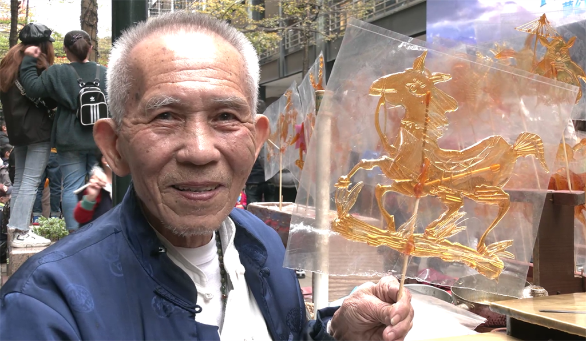
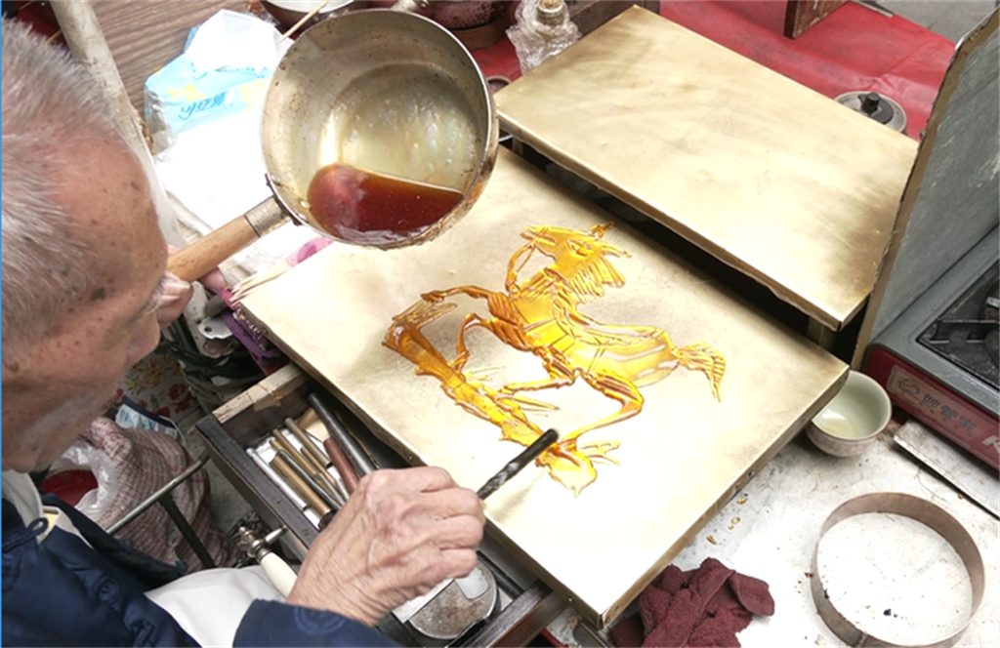
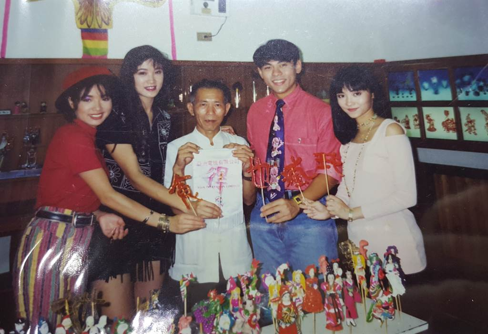
自小就對各種手工藝感興趣的高曉明，中學畢業後與一位老師傅學習金屬線手藝，製作珠寶飾品，想以此維生，卻遭到家人反對。考上大學一個學期後，他決定退學，全心投入自己熱愛的手工藝事業。
投身金屬線首飾期間，接觸到另一門手工藝，糖畫，令他萌生想學習的念頭。
透過朋友，與一位在河南的糖畫師傅拜師學藝。之後，他將老師傅留下的工具重新打造，做出一套漂亮的銅製工具，適合在表演場合使用，並再次拜師，繼續增進自己的手藝。
高曉明結合現代的行銷技巧，為自己建立品牌與形象包裝。「糖畫先生」便是他為自己所建立的形象，一些工具或佈置裝飾，甚至一個簡單插糖畫的底座，都花了許多心思，他也經常接受不同媒體的訪問，並積極參與各類的大型活動、工作坊。為了使糖畫作品的顏色更為豐富，不容易融化，他更特別調配了自己獨有的糖漿，運用糖畫的靈活性設計出豐富的圖案，不只侷限在傳統的設計中。
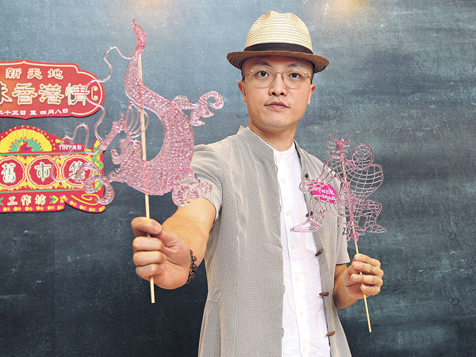
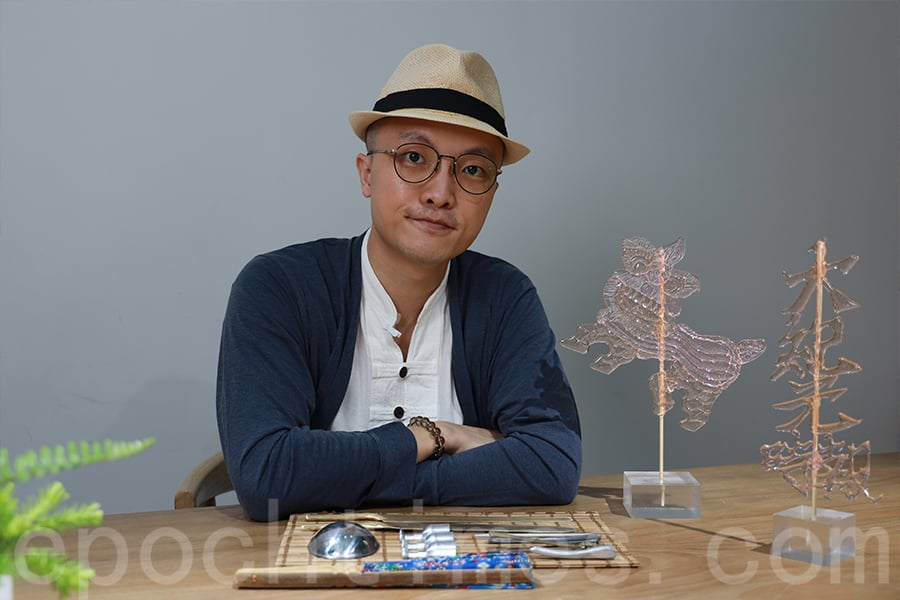
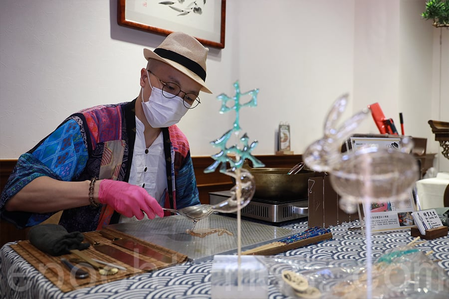
曾是工程師，後轉職為畫糖師傅。結合自身工程師的專業，研發糖藝筆，致力於推廣糖畫。除了街頭的畫糖展演，也於各地講座分享演講，並開設到府教學課程—糖畫職人到你家，希望糖畫不要只是回憶。
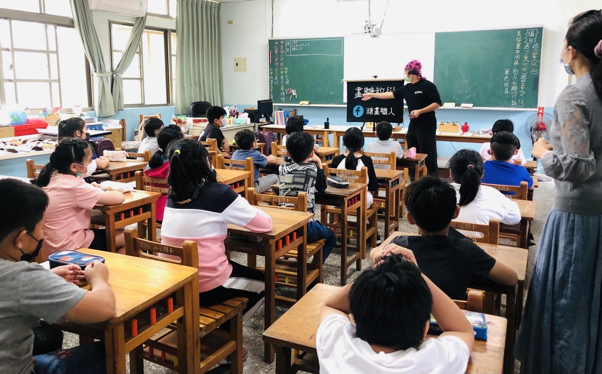
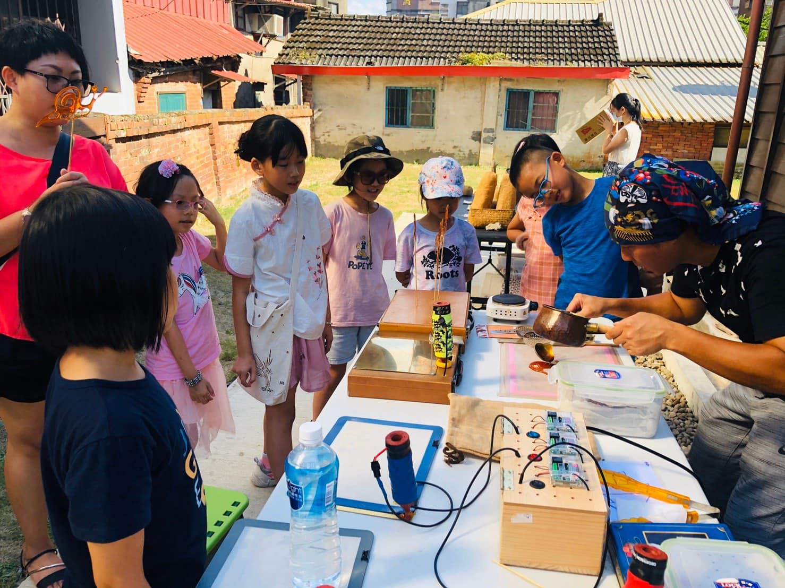
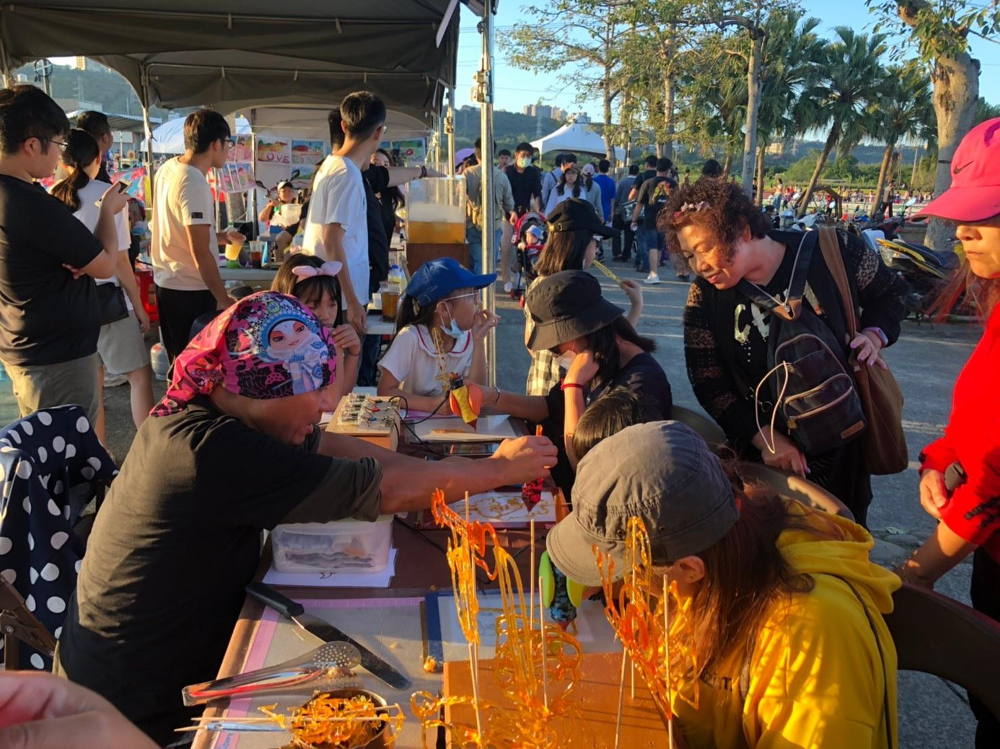